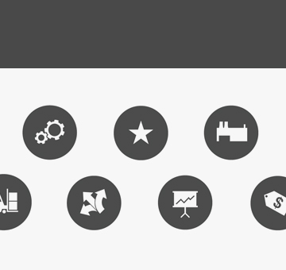
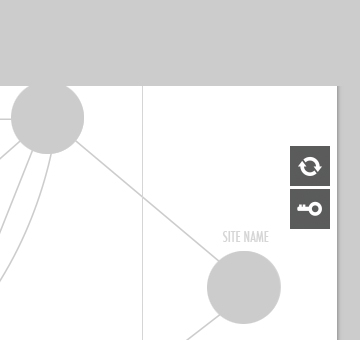
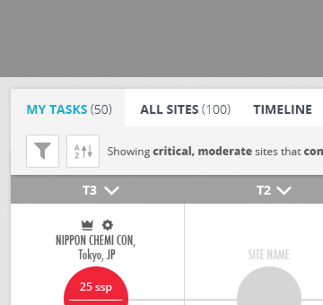
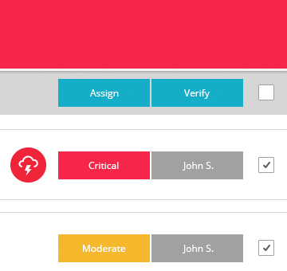
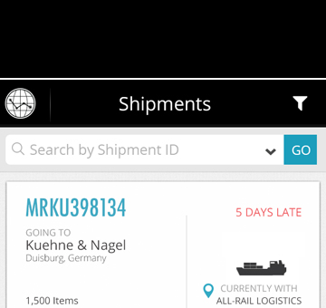
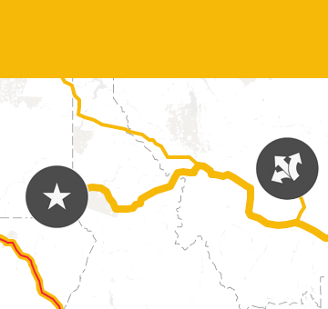
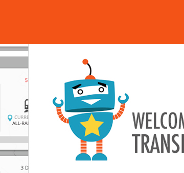

Color Usage
Elementum Teal 3

Teal 3 is the Elementum color for primary user action in our palette. It's our color for all text links as well as the color for primary buttons in a resting state.
Elementum Dark Gray

Dark Gray is a secondary - but crucial - Elementum color. As a general rule, it's our headline and body color for all text. It's bold value draws user attention but may, or may not, be an interaction color. It's our site icon color in a resting state across all Elemetum apps. We also leverage this color to strongly segment content, e.g. our sub-header on web apps.
Elementum Light Gray

Light Gray is a secondary Elementum color but core to the holistic design of our products. It's understated value allows it to been seen when looked for but will drop back - like a supporting player - when viewing at the canvas as a whole. It's the background canvas for all our user apps and used for secondary elements that do not require immediate user attention.
Elementum Medium Gray

Medium Gray is the Elementum color for intermediate user attention in our palette. It may, or may not, be an interaction color. It's a valuable go-to color for headers, segment content, and draw attention when warranted. We also use Medium Gray as our rollover state with most buttons.
Elementum Red

Red is the Elementum color for a bad performing route (defined as performing really under SLA) and/or a node. We use a high-saturation red to add urgency (but not necessarily an emergency). Action is always required by the user to resolve an object in red state. It is always an interaction color.
Elementum Black

Black is a secondary Elementum color used primarily as a top-header. Black is meant to to frame the canvas and should not appear anywhere else in the general layout of our web or mobile apps.
Elementum Yellow

Yellow is the Elementum color for a poor performing route (defined as performing just under SLA) and/or a node. It may, or may not, be an interaction color. We also use yellow as a button state in certain cases.
Elementum Green

Green is the Elementum color for a good performing route (defined as performing at or above SLA) and/or a node. It may, or may not, be an interaction color. We also use green as a button state in certain cases. We use a more pale version of green to avoid taking attention away from red and yellow elements that needs user attention.
Elementum Orange

Orange is a secondary Elementum color that is complimentary to our teal. It's used sparingly as an accent color. You can find our orange